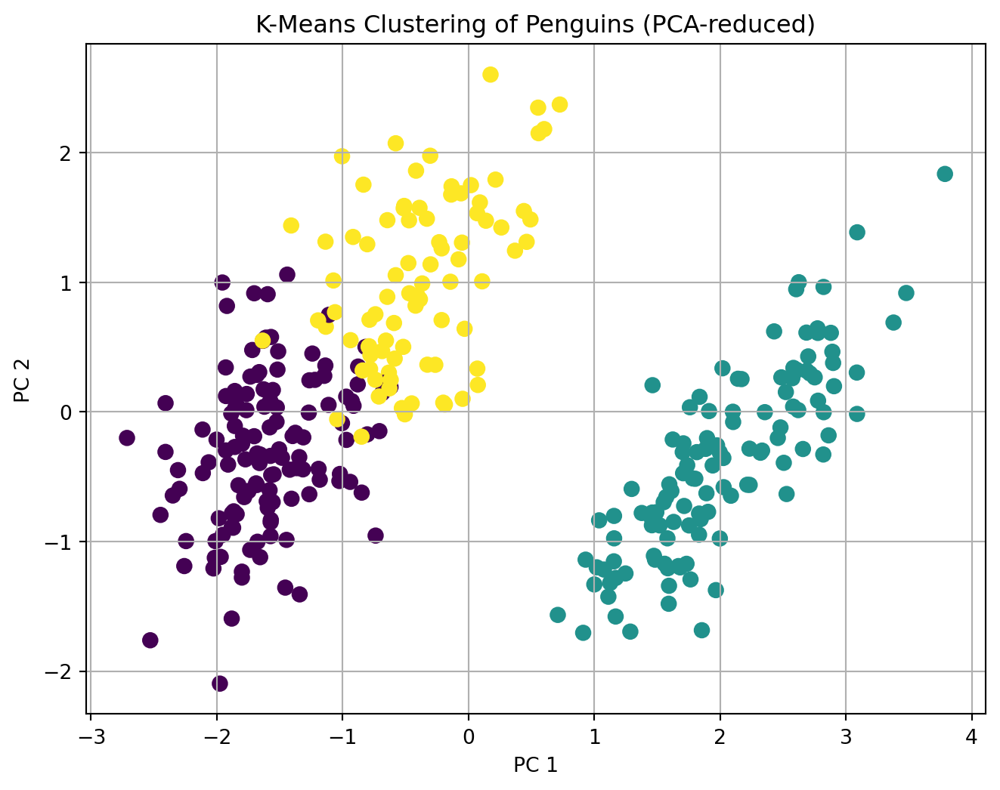

Show code
import pandas as pd
from sklearn.preprocessing import StandardScaler
from sklearn.linear_model import LinearRegression
from sklearn.metrics import r2_score
import numpy as np
df = pd.read_csv("data_for_drivers_analysis.csv")
X = df.drop(columns=["brand", "id", "satisfaction"])
y = df["satisfaction"]
scaler = StandardScaler()
X_scaled = pd.DataFrame(scaler.fit_transform(X), columns=X.columns)
pearson_corrs = X.corrwith(y).sort_values(ascending=False)
pearson_corrs
linreg = LinearRegression()
linreg.fit(X_scaled, y)
std_coeffs = pd.Series(linreg.coef_, index=X.columns).sort_values(ascending=False)
std_coeffs
full_r2 = r2_score(y, linreg.predict(X_scaled))
usefulness_scores = {}
for col in X.columns:
X_reduced = X_scaled.drop(columns=[col])
reduced_model = LinearRegression().fit(X_reduced, y)
reduced_r2 = r2_score(y, reduced_model.predict(X_reduced))
usefulness_scores[col] = full_r2 - reduced_r2
usefulness_series = pd.Series(usefulness_scores).sort_values(ascending=False)
usefulness_series
import shap
explainer = shap.Explainer(linreg.predict, X_scaled)
shap_values = explainer(X_scaled)
shap_importance = pd.DataFrame({
'feature': X.columns,
'mean_abs_shap': np.abs(shap_values.values).mean(axis=0)
}).sort_values(by='mean_abs_shap', ascending=False)
shap_importance
from numpy.linalg import eig
R = np.corrcoef(X_scaled.T)
eigen_vals, eigen_vecs = eig(R)
lambda_matrix = eigen_vecs @ np.diag(np.sqrt(eigen_vals))
beta_raw = lambda_matrix.T @ X_scaled.T @ y
raw_weights = (lambda_matrix @ beta_raw) ** 2
relative_weights = raw_weights / sum(raw_weights)
johnson_weights = pd.Series(relative_weights, index=X.columns).sort_values(ascending=False)
johnson_weights
from sklearn.ensemble import RandomForestRegressor
rf = RandomForestRegressor(n_estimators=100, random_state=42)
rf.fit(X_scaled, y)
rf_importances = pd.Series(rf.feature_importances_, index=X.columns).sort_values(ascending=False)
rf_importances
summary_table = pd.DataFrame({
"Pearson Corr": pearson_corrs,
"Standardized Coef": std_coeffs,
"Usefulness": usefulness_series,
"Johnson Weight": johnson_weights,
"SHAP": shap_importance.set_index("feature")["mean_abs_shap"],
"Gini Importance": rf_importances
}).round(4).sort_values("Johnson Weight", ascending=False)
summary_table
penguins = pd.read_csv("/home/jovyan/Desktop/mysite/projects/hw4/palmer_penguins.csv")
features = ["bill_length_mm", "bill_depth_mm", "flipper_length_mm", "body_mass_g"]
penguins = penguins[features + ["species"]].dropna()
scaler = StandardScaler()
X_penguins = pd.DataFrame(scaler.fit_transform(penguins[features]), columns=features)
def initialize_centroids(X, k):
return X.sample(k, random_state=42).to_numpy()
def assign_clusters(X, centroids):
distances = np.linalg.norm(X.to_numpy()[:, np.newaxis] - centroids, axis=2)
return np.argmin(distances, axis=1)
def update_centroids(X, labels, k):
return np.array([X[labels == i].mean(axis=0) for i in range(k)])
def kmeans(X, k=3, max_iters=100, tol=1e-4):
centroids = initialize_centroids(X, k)
for _ in range(max_iters):
labels = assign_clusters(X, centroids)
new_centroids = update_centroids(X, labels, k)
if np.all(np.linalg.norm(new_centroids - centroids, axis=1) < tol):
break
centroids = new_centroids
return labels, centroids
import matplotlib.pyplot as plt
from sklearn.decomposition import PCA
labels, centroids = kmeans(X_penguins, k=3)
X_pca = PCA(n_components=2).fit_transform(X_penguins)
plt.figure(figsize=(8,6))
plt.scatter(X_pca[:,0], X_pca[:,1], c=labels, cmap='viridis', s=50)
plt.title("K-Means Clustering of Penguins (PCA-reduced)")
plt.xlabel("PC 1")
plt.ylabel("PC 2")
plt.grid(True)
plt.show()
from sklearn.metrics import adjusted_rand_score
true_labels = pd.factorize(penguins["species"])[0]
ari = adjusted_rand_score(true_labels, labels)
print("Adjusted Rand Index (vs. true species):", round(ari, 3))
Adjusted Rand Index (vs. true species): 0.799